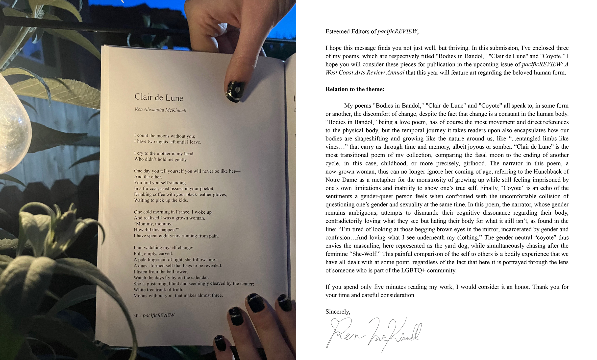
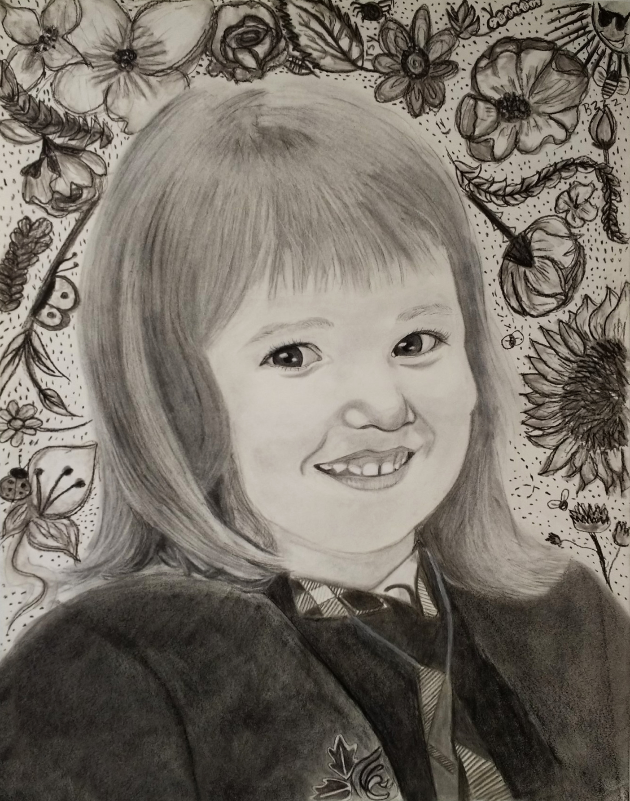

Jeu Vidéo JavaScript The Price is Precise! (L'ingénierie de la Localisation)
Explication du Projet
Développé de toutes pièces, The Price is Precise! est un jeu web dynamique en JavaScript conçu pour démontrer mes compétences en ingénierie de localisation (i18n). M'appuyant sur mon profil trilingue, j'ai codé un système de basculement linguistique qui permet de traduire l'interface entre l'anglais, le français et l'espagnol en temps réel, sans aucun rechargement de page. Pour le déployer de manière sécurisée, j'ai créé un environnement sur mesure avec un thème parent-enfant sous WordPress, en utilisant WPCode pour gérer les injections JS, CSS et HTML sans compromettre l'architecture globale du site. C'est un bac à sable coloré et nostalgique, idéal pour expérimenter avec la logique, les tableaux (arrays) et l'expérience utilisateur interculturelle... avec quelques petits détails de version MVP assumés, pour le charme !
Kits de Marketing Numérique (Conception-Rédaction & Création de Contenu)
.png)
Explication du Projet
En tant que superviseuse chez Runway Games, je dirige la conception-rédaction et la création de contenu pour nos campagnes numériques. Mon rôle consiste à réviser, affiner et optimiser les supports marketing pour les lancements de nos nouveaux jeux avant leur publication sur notre plateforme, runaway.games, où les entreprises réservent directement nos expériences de team-building. L'impact de cette stratégie est immédiat : à titre d'exemple, moins de 24 heures après le lancement du kit marketing pour notre édition "Journée Internationale des Droits des Femmes" du jeu Jeoparty (illustrée ci-dessus), nous enregistrions déjà de nouvelles réservations directes de la part de nos clients.
Animation Chouette et Grue (Illustration Numérique & Motion Design)
Explication du Projet
Inspirée par les paysages et la faune de mon enfance à San Diego en Californie, cette œuvre numérique met en scène la rencontre poétique entre une chouette et une grue. J'ai peint et animé chaque élément minutieusement à la main sur Adobe Photoshop, alliant les techniques d'illustration traditionnelle au mouvement numérique. Ce projet reflète ma passion pour l'art visuel et ma capacité à donner vie à des récits visuels grâce au motion design.
Guide d'Études à l'Étranger CSU (Projet de Localisation Culturelle)

Explication du Projet
En tant qu'alumna du programme international de la California State University (CSU), j'ai conçu et localisé ce guide complet pour les étudiants arrivant à Aix-en-Provence. Au-delà d'une simple traduction, ce projet est un exercice de localisation culturelle : il adapte les conseils pratiques, les nuances administratives et la vie quotidienne française pour un public étudiant californien. Ce document sert de pont entre deux systèmes académiques et cultures, facilitant l'intégration des étudiants grâce à une approche authentique et un design intuitif, fruit de ma propre expérience d'immersion totale pendant un an dans le sud de la France.
Ma directrice de programme a salué ce travail pour son attention aux détails et son esthétique engageante. Preuve de sa pertinence et de sa qualité, ce guide est toujours utilisé officiellement par l'université aujourd'hui pour orienter les nouvelles cohortes d'étudiants.
Ce projet témoigne de mon aptitude à transformer des processus bureaucratiques complexes en une expérience utilisateur (UX) fluide, visuelle et surtout pérenne.
"Clair de Lune" (Poème Publié - pacificREVIEW)

Explication du Projet
Publié dans l'édition 2024 de la revue littéraire américaine pacificREVIEW, "Clair de Lune" est une œuvre poétique très personnelle qui explore la fin de l'enfance et le passage complexe à la vie de femme. Comme je l'explique dans ma lettre d'intention aux éditeurs, le poème utilise les cycles lunaires et la figure du Bossu de Notre-Dame comme métaphores de cette transition. Il illustre la difficulté de grandir, le deuil de l'innocence, et la dualité de se sentir parfois prisonnière de ses propres limites tout en cherchant à révéler sa véritable identité.
Texte Original (Accessibilité)
"Clair de Lune" by Ren Alexandra McKinnell
I count the moons without you;
I have two nights left until I leave.
I cry to the mother in my head
Who didn’t hold me gently.
One day you tell yourself you will never be like her—
And the other,
You find yourself standing
In a fur coat, used tissues in your pocket,
Drinking coffee with your black leather gloves,
Waiting to pick up the kids.
One cold morning in France, I woke up
And realized I was a grown woman.
“Mommy, mommy,
How did this happen?”
I have spent eight years running from pain.
I am watching myself change:
Full, empty, carved.
A pale fingernail of light, she follows me—
A quasi-formed self that begs to be revealed.
I listen from the bell tower,
Watch the days fly by on the calendar.
She is glistening, blunt and seemingly cleaved by the center:
White tree trunk of truth.
Moons without you, that makes almost three.
Autoportrait d'Enfance (Dessin au Fusain)

Explication du Projet
Ce projet est un autoportrait grand format réalisé entièrement au fusain, capturant une photographie de moi à l'âge de quatre ans. Bien que mon travail actuel se concentre principalement sur la création numérique, l'illustration vectorielle et le code, cette œuvre illustre mes fondations en art traditionnel.
La maîtrise des contrastes, des textures et des proportions acquise grâce à des médiums classiques et exigeants comme le fusain reste une compétence essentielle qui nourrit et structure mon approche du design numérique aujourd'hui.